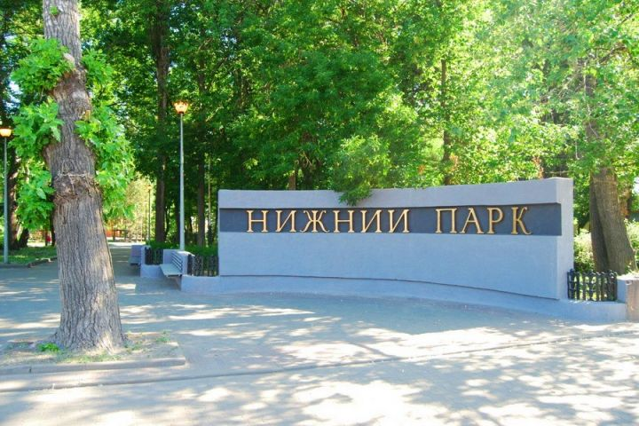

В XVIII веке на этом месте находился Петровский пруд. В то время площадь пруда составляла 70 г. В царской России это был самый большой рукотворный водоём.
Пруд питал водой расположенные рядом Липские железоделательные заводы (см. НЛМК). После закрытия предприятия его здания некоторые время оставались.
Это два каменных корпуса, деревянная контора и другие постройки. Кроме того, было два дома для заводских начальников и домик Петра I. Их снесли лишь в 1803—1804 годах.
Это было необходимо для строительства курорта. Во 2-й половине 1960-х на их месте (недалеко от Петровского проезда) установили памятник зарождению металлургии в Липецке.
Это три пушки, поставленные на прямоугольный пьедестал. Проект выполнил архитектор С. А. Кастюнин.
